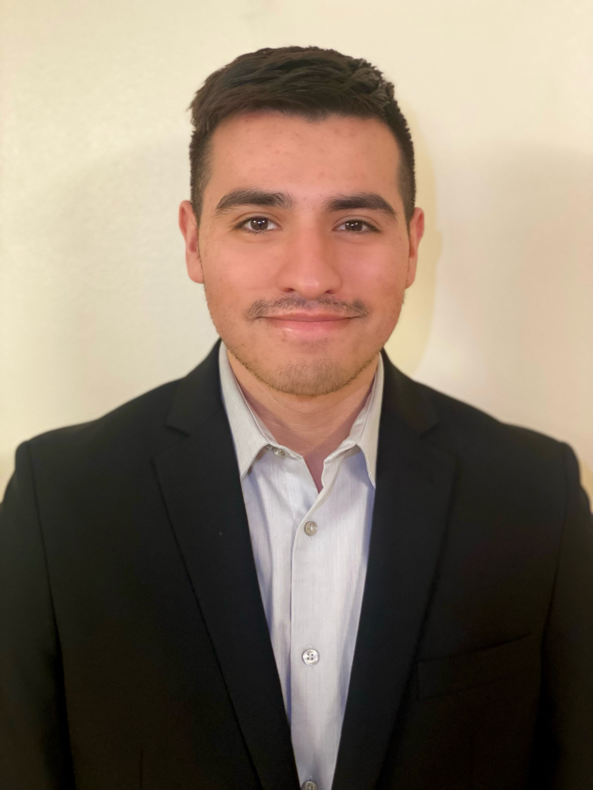

I know that there is still a ways to go for me to get where I want to be in my career. But one thing I can say is that I am proud of myself for how far I have gone. I have had to make many different decisions and sacrifices to be in the position I am in. If it were not for my dedication, persistence, and hardwork, I am uncertain where I would have been. However, what I am certain about is that these traits I have described are the same ones that will help myself reach my career goals. I want to get into the Cybersecurity field for my career, and my interest for this field has driven me to learn on my own. There is still some uncertainty of what I exactly want to do with my Cybersecurity minor that I am working towards to at Bradley University along with Bachelor's Degree in Computer Information Systems. But I am learning more towards learning how to do penetration testing.
